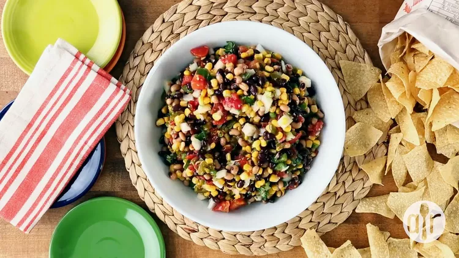

Cowboy Caviar

Here is an example of cowboy caviar and if you're luckier than me yours might turn out like this.
I hope you enjoy your meal!
Traditionally, cowboy caviar is served as an appetizer with tortilla chips.
But that's not the only way to enjoy this Southern staple! You can also serve it as a
light salad alongside your dinner or you can make it a meal by layering it with rice or
lettuce.
Ingredients
- 15.5 oz can black beans, drained
- 15.5 can black-eyed peas, drained
- 14.5 oz can diced tomatoes, drained
- 2 cups frozen corn kernels, thawed
- 1/2 medium onion, diced
- 1/4 medium green bell pepper, finely chopped
- 1/2 cup chopped pickled jalapeno peppers
- 1/2 teaspoon garlic salt
- 1 cup italian salad dressing
- 3/4 cup chopped cilantro
Directions
- Gather all ingredients.
- Mix black beans, black-eyed
peas, diced tomatoes, corn, onion, bell pepper, and
jalapeño peppers together in a large bowl.
- Season with garlic salt, then pour in
Italian salad dressing and add cilantro. Mix until well coated.
- Refrigerate until flavors have melded, at least 20 minutes or up to
3 days, before serving.